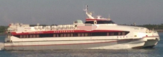

378 PAX 499 GRT Catamaran Fast Ferry Blt 2002 Ru
/ informed by BNC SHIPBROKING CO., LTD.
(18-284)

- TYPE : CATAMARAN TYPE OF FAST FERRY
- BUILT : JUNE 2002, ALMAZ MARINE YARD CO LTD., PETERSBURG, RUSSIA
- FLAG/CLASS : TAIWAN / CR 100, ALLUMINUM ALLOY, HSC-H, COASTAL SERVICE
- LOA/L/B/D : 40.28 / 36.0 / 11.00 / 3.45 M
- GRT/NRT : 499 / 173 T
- MAIN ENGINE : MTU 12V4000 M70, 1,740 KW X 2,000 RPM X 4set
- GENERATOR : BENZ 78 KW X 2set
- PROPULSION : WATERJET MJP J550 DD X 4set
- SPEED : TRIAL MAX 55 KNOTS, CURRENT SPEED 30-32kt
- FO CONSUMPTION : 1,461.6 kg/hr
- PASSENGER CAPACITY: 378 PAX (EXCLUDING 8 CREWS)
- HULL MATERIAL : ALUMINIUM ALLOY
- FUEL OIL TANK : PORT (5,000 LITERS) + STARBOARD (5,000 LITERS)
- NEXT SS : DEC. 26, 2021
- NEXT DD : FEB. 28, 2019
- LOCATION : TRADING JIA-YI (SOUTH TAIWAN) TO PENGHU OFFSHORE ISLAND (TAIWAN)
Information History
- 180730 : She is available for sale.
- 180330 : She is available for sale.